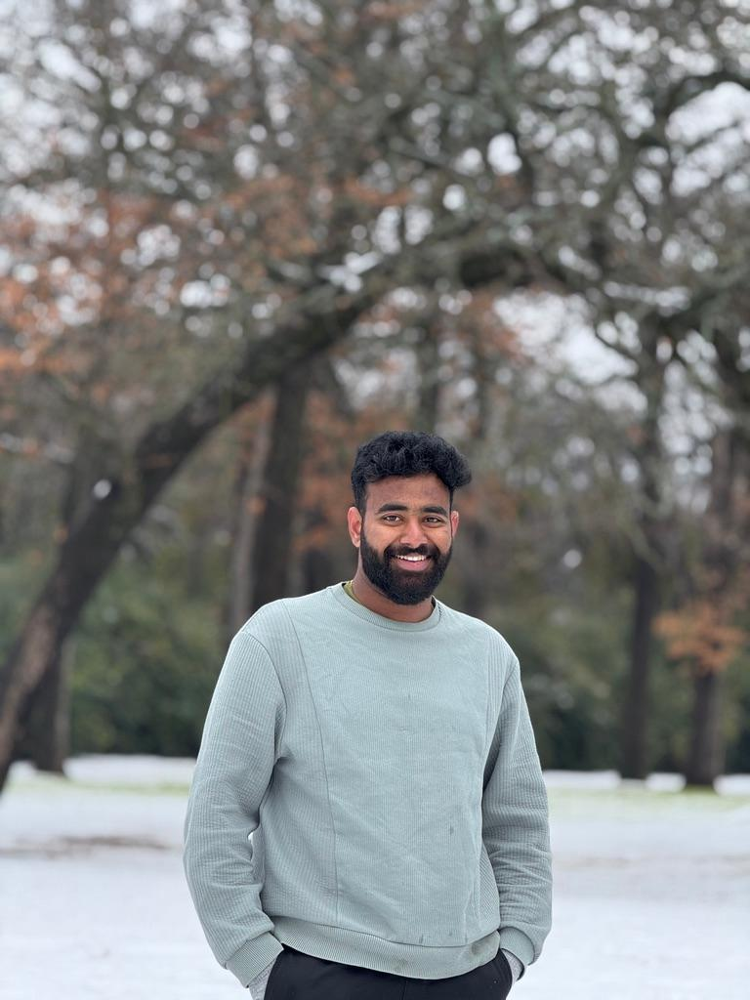

About Me
Hello there! My name is Uday Kiran Reddy Bommu, and I am a Computer Science graduate student specializing as a software developer. Also working as GTA under Software Testing course since August 2024 mentoring students, passionate about creating innovative software solutions that can make a positive impact on people's lives.
Over the past few years, I have honed my skills in various programming languages such as Java, Python, and C++. I have also worked on a number of software development projects, ranging from mobile applications to web development.
One of my biggest strengths is my ability to work collaboratively with other team members. I believe that open communication, mutual respect, and a willingness to learn from others are key factors in creating successful software projects. I am always eager to learn new technologies and techniques that can help me improve my work.
In addition to my technical skills, I also possess strong organizational, analytical, and problem-solving abilities. I am confident that my combination of technical and soft skills makes me a valuable asset to any software development team.